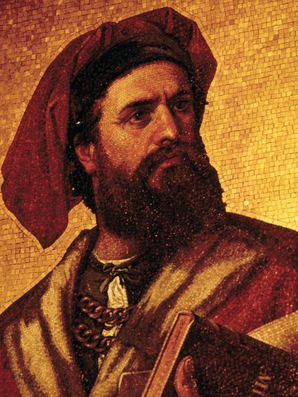
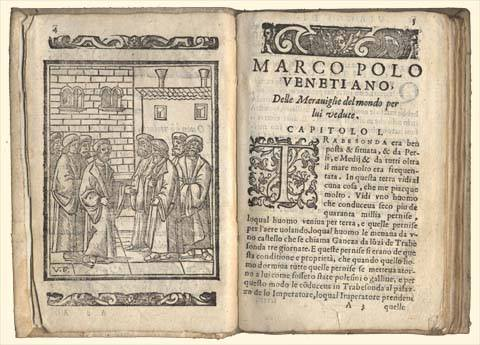

Marco Polo
Il mercante veneziano che aprì l'Europa all'Asia

1254 - 1324 | Esploratore, mercante e autore de "Il Milione"
I Numeri del Viaggio
🗺️ Il Grande Viaggio (1271-1295)
🚶 Andata: La Via della Seta
Partiti da Venezia nel 1271, Marco Polo insieme al padre Niccolò e allo zio Maffeo attraversarono l'Anatolia, la Persia, il Pamir e il temuto deserto del Gobi, seguendo i rami settentrionali della Via della Seta.
Cos'era la Via della Seta?
Non era un'unica strada, ma una vasta rete di percorsi commerciali terrestri e marittimi che collegavano la Cina al Mediterraneo. Vi transitavano:
- 🧵 Seta cinese (la merce più pregiata)
- 🌶️ Spezie, pietre preziose, tessuti
- 💡 Tecnologie e idee religiose
Obiettivo: Raggiungere la corte di Kublai Khan per stabilire relazioni commerciali.
🏯 Permanenza nel Catai
Soggiornarono per 17 anni presso la corte di Kublai Khan, Gran Khan dell'Impero Mongolo. Marco Polo divenne un funzionario fidato, compiendo missioni diplomatiche e amministrative in varie province.
Cosa ammirò Marco Polo in Cina?
- Carta moneta: Innovazione sconosciuta in Europa
- Carbone fossile: "Pietre nere che bruciano"
- Sistema postale Yam: Staffette veloci per comunicazioni imperiali
- Tolleranza religiosa: Cristiani, buddisti e musulmani convivevano
⛵ Ritorno: La Via del Mare
Nel 1292 scortarono la principessa mongola Kököchin in Persia. Il viaggio di ritorno avvenne via mare, circumnavigando l'Indocina, l'India e toccando Sumatra, prima di rientrare a Venezia nel 1295.
Il viaggio di ritorno fu pericoloso: molte persone del seguito morirono durante la traversata. Marco Polo tornò ricco di esperienze, oggetti esotici e storie incredibili che avrebbe poi raccontato nel Milione.
📖 Il Milione: L'Opera

Come nacque il libro?
L'opera fu scritta nel 1298 durante la prigionia di Marco Polo a Genova, dopo la Battaglia di Curzola. In carcere incontrò Rustichello da Pisa, scrittore di romanzi cavallereschi, che trascrisse e diede forma letteraria ai racconti di Polo.
Lingua: Franco-veneto (lingua cortese dell'Italia settentrionale)
Titolo: Forse dal soprannome familiare "Emilione" o dai "milioni" di meraviglie descritte.
✨ Temi Principali del Milione
Descrizioni etnografiche: Popoli, usi, costumi e religioni di terre sconosciute agli europei (cristiani nestoriani, buddisti, musulmani).
Fauna esotica: Animali mai visti in Europa, descritti con meraviglia e precisione.
Città straordinarie: Hangzhou definita "la più nobile e la più eccellente che sia al mondo".
Mercati e merci: Focus su spezie, pietre preziose, tessuti pregiati e tecniche artigianali orientali.
Innovazioni tecnologiche: Carta moneta, carbone fossile, sistema postale efficiente.
Rotte commerciali: Indicazioni pratiche per mercanti su percorsi, pericoli e opportunità.
L'Impero Mongolo: Elogio dell'efficienza amministrativa, della tolleranza religiosa e della sicurezza delle strade.
Kublai Khan: Ritratto del sovrano come leader carismatico, saggio e aperto alle culture diverse.
Sistema Yam: Rete di staffette postali che permetteva comunicazioni velocissime in tutto l'impero.
📚 Struttura del Libro
- Prologo: Primo viaggio di Niccolò e Maffeo Polo, incontro con Kublai Khan
- Asia Centrale: Armenia, Persia, Afghanistan, Pamir, deserto del Gobi
- Il Catai (Cina): Corte imperiale di Cambaluc (Pechino), città, amministrazione
- India e Isole: Coste indiane, Sri Lanka, Sumatra, Giava, spezie
- Epilogo: Ritorno via mare, morte di Kublai Khan, arrivo a Venezia
🌟 Eredità Storica
🗺️ Cartografia
Il Milione influenzò profondamente la cartografia medievale. Il Mappamondo di Fra Mauro (ca. 1450) integrò le conoscenze di Marco Polo per correggere la posizione di molte regioni asiatiche.
🚢 Grandi Esplorazioni
Cristoforo Colombo possedeva una copia annotata del Milione. Le descrizioni delle ricchezze del Catai e del Cipango (Giappone) lo spinsero a cercare una rotta occidentale per l'Asia.
🌍 Impatto Culturale
Inizialmente considerato da molti una raccolta di esagerazioni ("Il Milione" come "mille bugie"), col tempo le descrizioni di Polo furono confermate, consolidando il suo ruolo come ponte fondamentale tra Oriente e Occidente.
📖 Ripassa Prima del Quiz!
Leggi attentamente queste informazioni e prova a rispondere alle domande
👤 Chi era Marco Polo?
📍 Domanda 1: Quando e dove nacque?
Risposta: Tra il 1254 a Venezia.
📍 Domanda 2: Chi erano i suoi compagni di viaggio?
Risposta: Il padre Niccolò e lo zio Maffeo.
📍 Domanda 3: Quale ruolo ebbe presso Kublai Khan?
Risposta: Divenne un funzionario fidato per missioni diplomatiche.
📍 Domanda 4: Quando e dove morì?
Risposta: Nel 1324 a Venezia.
📚 L'Opera
📍 Domanda 5: Chi scrisse materialmente il libro?
Risposta: Rustichello da Pisa durante la prigionia a Genova (1298).
📍 Domanda 6: In quale lingua fu scritto?
Risposta: In franco-veneto.
📍 Domanda 7: Quali innovazioni tecnologiche descrisse?
Risposta: Carta moneta, carbone fossile, sistema postale Yam.
🌟 Impatto Storico
📍 Domanda 8: Come influenzò la cartografia?
Risposta: Il Mappamondo di Fra Mauro (1450) usò le sue descrizioni.
📍 Domanda 9: Quale ruolo ebbe per Colombo?
Risposta: Colombo possedeva una copia annotata; lo spinse a cercare una rotta occidentale.
📚 Fonti Consultate
- Treccani - Enciclopedia Italiana
- Geopop - Approfondimenti sulla Via della Seta
- Focus Junior - Spiegazioni su Il Milione
- Libro di storia - Impatto sulle esplorazioni